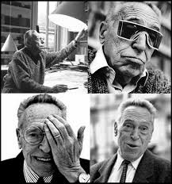

Achille Castiglioni
Achille Castiglioni (February 26, 1918 - December 2, 2002) was a renowned Italian industrial designer.
He was often inspired by everyday things and made use of ordinary materials.
He preferred to use a minimal amount of materials to create forms with maximal effect.
Biography
Achille Castiglioni was born in Milan and studied architecture at the Politecnico di Milano University and set up a design office in 1944 with his brothers, Livio Castiglioni and Pier Giacomo Castiglioni. In 1956, Castiglioni founded the "Associazione per il Disegno Industriale" (Association for Industrial Design, ADI). Castiglioni taught for many years, first at the Politecnico di Torino. In 1969 and later he led a class in Industrial Design at the faculty of Architecture at Politecnico di Milano, teaching several thousand students. Castiglioni has exhibited his designs at every Milan Triennial since 1947 and has received nine Compasso d'Oro awards. Most of Castilglioni's products are design classics and are still in production under licence.
Very important work are chair like "Mezzadro" and "Sella" (1957), "Sanluca" (1959), the desk lamp "Tubino" (1951), the floor lamp "Luminator" (1955) and "Arco" (1962) produced by Flos, the table lamp "Taccia" (1962), the seat "Allunaggio" (1962) and the floor lamp "Toio". He died December 2, 2002, at the age of 84 years, due to the aftermath of an accidental fall in his studio in Piazza Castello in Milan. He was buried in Monumental Cemetery in Milan.
Fourteen of his main works are present at the MOMA, Museum of Modern Art, in New York where, in 1997, curator Paola Antonelli, was built the largest retrospective ever devoted to the museum for an Italian designer.
In addition to the American museum, other important galleries exhibit his works including: Victoria and Albert Museum in London, Kunstgewerbe Museum in Zurich, Bode-Museum fur Angewandte Kunst in Monaco, the Design Museum in Prato, Uneleckoprumyslove Prague Museum, Israel Museum in Jerusalem , The Denver Art Museum, the Vitra Design Museum in Weil am Rhein, Angewandte Kunst Museum of Hamburg and Cologne.
Achille Castiglioni paired with his brother Pier Giacomo has designed objects of mass production for companies such as: Kartell, Zanotta, Flos, Bernini, Siemens, Knoll, Poggi, Lancia, Ideal Standard, Arflex, Alessi.
More information about Achille Castiglioni, his work and his association can be found here
ZANOTTA Design
The company Zanotta is an Italian company specialized in the furniture industry, most famously known for his contribution to the evolution of Italian design in the fifties and sixties.
Founded by Aurelio Zanotta, the company immediately began to engage in the production process known names of the Italian design and architecture. Among them, Achille Castiglioni, Gae Aulenti, Marco Zanuso, Ettore Sottsass, Joe Colombo, Alessandro Mendini, Andrea Branzi, Giuseppe Terragni, Carlo Mollino, De Pas-D'Urbino-Lomazzi, Enzo Mari, Bruno Munari, Ross Lovegrove.
More information about Zanotta company can be found here
For the final project of the course Computational Graphics I chose some models of Zanotta design, designed by Achille Castiglioni:
- Basello
- Servomuto
- Servonotte
- Servopluvio
- Fantastic 12